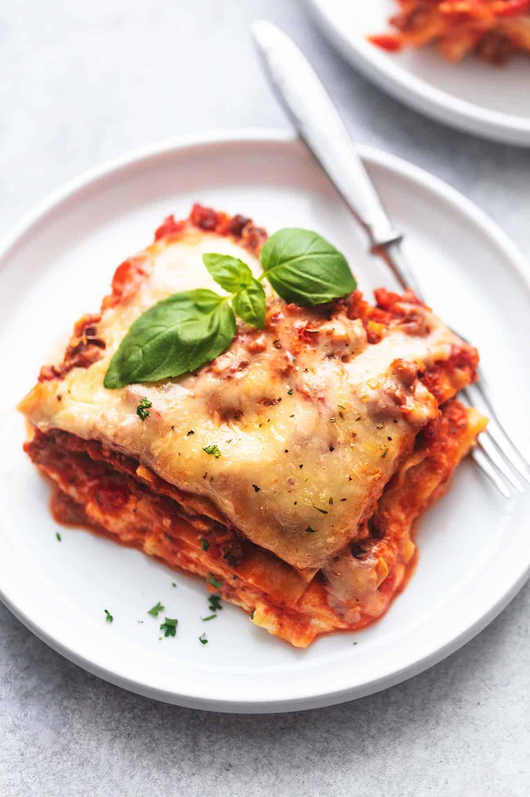

lasagna

Description
This is plant based lasagna, not only is it tasty, but meatless.
This Lasagna will take about 30 minutes to make, below will be the ingredients.
ingredients
- Non Diary cheese
- 2 cups raw cashews, soaked for at least 4 hours if you do not have a high-powered blender
- 1 cup water
- 2 tablespoons lemon juice
- 2 teaspoons apple cider vinegar
- ¾ teaspoon fine sea salt
- ½ teaspoon Dijon mustard
- 2 tablespoons extra-virgin olive oil
- 1 medium-to-large yellow onion, chopped
- 2 large or 3 medium carrots, chopped (about 1 cup)
- 8 ounces Baby Bella mushrooms, cleaned and chopped
- ½ teaspoon fine sea salt, to taste
- Freshly ground black pepper, to taste
- 2 cloves garlic, pressed or minced
- 5 to 6 ounces baby spinach, roughly chopped
Steps
- Preheat the oven to 425 degrees Fahrenheit. If you soaked your cashews, drain and rinse them until the water runs clear.
- In a blender, combine the cashews, water, lemon juice, vinegar, salt, and mustard. Blend until the mixture is smooth and creamy, stopping to scrape down the sides as necessary. If you’re having trouble blending the mixture, slowly blend in up to ½ cup additional water, using only as much as necessary. Set aside.
- Then, we’ll prepare the vegetables: In a large skillet over medium heat, warm the olive oil. Once shimmering, add the onion, carrots, mushrooms, salt and several twists of black pepper. Cook, stirring every couple of minutes, until most of the moisture is gone and the vegetables are tender and turning golden on the edges, about 8 to 10 minutes. Add another splash of olive oil if necessary to prevent them from sticking to the bottom of the pan.
- Add a few large handfuls of spinach to the skillet. Cook, stirring frequently, until the spinach has wilted. Repeat with remaining spinach and cook until all of the spinach has wilted, about 3 minutes. Add the garlic and cook until fragrant, stirring constantly, about 30 seconds. Remove the skillet from the heat and season to taste with salt and pepper.
- Spread ¾ cup tomato sauce evenly over the bottom of a 9” by 9” baking dish. Layer 3 lasagna noodles on top (snap off their ends to fit, and/or overlap their edges as necessary). Spread 1 cup of the cashew cream evenly over the noodles. Top with half of the veggies. Top with ¾ cup tomato sauce.
- Top with 3 more noodles, followed by another 1 cup cashew cream (save the leftover cream). Then add the remaining veggies.
- Top with 3 more noodles, then spread ¾ cup tomato sauce over the top to evenly cover the noodles
- Wrap a sheet of parchment paper or aluminum foil around the top of the lasagna, making sure it’s taut so it doesn’t touch the top. Bake, covered, for 25 minutes, then remove the cover, rotate the pan by 180° and continue cooking for about 5 to 10 more minutes, until it’s steaming and lightly bubbling at the corners.
- Remove the pan from the oven and let the lasagna cool for 15 to 20 minutes, so it has time to set and cool down to a reasonable temperature. Drizzle leftover cashew cream on top (if it’s too thick to drizzle, thin it out with a small amount of water first). Sprinkle vegan Parmesan and fresh basil on top, if using, then slice and serve.